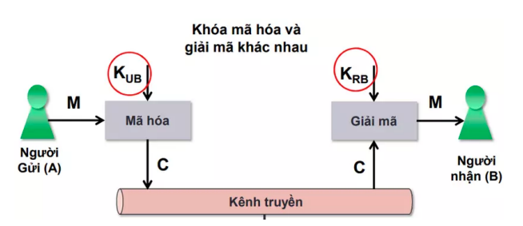
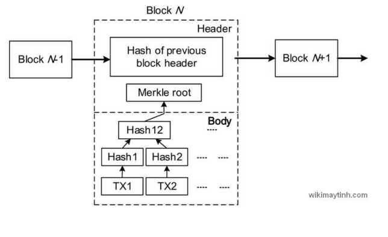
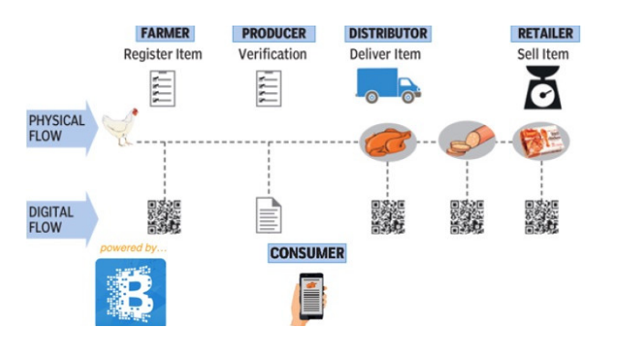
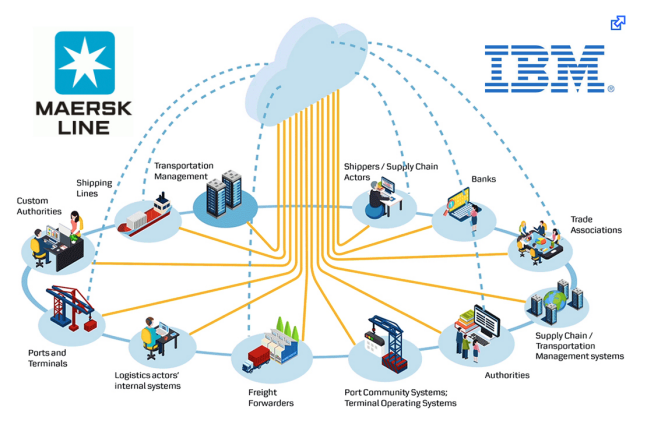
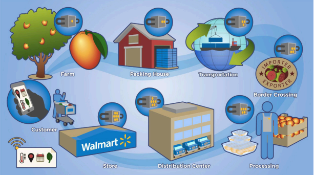

PHẦN 1
Tổng quan về Blockchain
Giới thiệu chung
Blockchain là hệ thống cơ sở dữ liệu dùng để lưu trữ dữ liệu, truyền tải các khối thông tin được liên kết lại với nhau nhờ mã hóa. Không giống với những công nghệ lưu trữ khác thì blockchain có những thế mạnh mà không một công nghệ nào có thể làm được.
Cụ thể hơn, blockchain là một chuỗi các khối tuyến tính được kết nối và bảo mật bằng các bằng chứng mật mã. Blockchains thường được xây dựng dưới dạng hệ thống phân tán đóng vai trò như một sổ cái phi tập trung. Điều này có nghĩa là có nhiều sổ cái (phân tán) mà không một tổ chức nào có thể kiểm soát (phi tập trung). Nói tóm lại, mọi người dùng tham gia vào mạng blockchain đều giữ một bản sao điện tử của dữ liệu blockchain. Dữ liệu chuỗi khối được cập nhật thường xuyên với tất cả các giao dịch mới nhất và được đồng bộ hóa với bản sao của người dùng.
Hiện nay, có nhiều người lầm tưởng blockchain và bitcoin là một nhưng thực tế thì bitcoin cũng như hàng trăm đồng tiền điện tử khác đã được tạo ra dựa trên nền tảng công nghệ blockchain. Có thể nói blockchain là một nền móng hạ tầng kiên cố và bitcoin là một toà nhà chọc trời được xây dựng trên nền tảng blockchain.
Trong blockchain, đơn vị lưu trữ cơ bản là một khối dữ liệu – block. Dữ liệu của chúng ta sẽ được đóng gói trong một khối. Sau đó khối này sẽ được khóa lại bằng thuật toán mã hóa. Một khi đã khóa xong thì dữ liệu này sẽ không bao giờ thay đổi được nữa. Nó là một bằng chứng bất di bất dịch và tồn tại mãi mãi. Các khối sau khi tạo ra sẽ được liên kết lại với nhau thành một chuỗi giống như sợi dây xích. Và đó chính là tên gọi của công nghệ chuỗi khối – blockchain. Khối đầu tiên của chuỗi này gọi là genesis block – khối khởi nguồn.
Sự phát triển của blockchain sẽ trải qua 3 phiên bản, ở mỗi phiên bản blockchain sẽ cho phép xây dựng những ứng dụng cụ thể. Ở phiên bản đầu tiên chính là các loại tiền điện tử, trong đó, đồng bitcoin đang làm mưa làm gió thị trường tài chính bây giờ cũng chỉ là một ứng dụng được xây dng trên nền tảng công nghệ blockchain mà thôi. Và hiện nay đang có khoảng 700 loại tiền điện tử tương tự như bitcoin đang hoạt động. Ở phiên bản 2.0, blockchain sẽ cho phép xây dựng nên những ứng dụng liên quan tới tài chính và hợp đồng thông minh – smart contract, giúp tự động hóa các thỏa thuận, minh bạch hóa các giao dịch và tiết kiệm thời gian, giảm thiểu chi phí quản trị các hệ thống tài chính. Tới phiên bản 3.0 thì blockchain sẽ tham gia gần như vào tất cả các lĩnh vực của xã hội như quân đội, giáo dục, y tế và pháp luật.
Lịch sử hình thành
Các nhà nghiên cứu Stuart Haber và W. Scott Stornetta đã lên ý tưởng cho công nghệ vào những năm 1990.Ý tưởng này được hình thành ngay trong năm 1991 khi hai nhà nghiên cứu Stuart Haber và W.Scott Stornetta đề xuất một giải pháp thực tế về mặt toán học nhằm xác định thời điểm giao dịch dể các dữ liệu không bị thay đổi hoặc can thiệp vào. Hệ thống đã sử dụng một chuỗi bao gồm những khối được bảo vệ bởi mật mã để lưu giữ những tài liệu được đánh dấu trước. Và vào năm 1992, những cây Merkle đã được đưa vào thiết kế để biến chúng trở nên hữu ích hơn bằng việc sử dụng một khối có thể lưu giữ vài ký tự. Tuy nhiên, công nghệ blockchain đã không được phát triển vì bằng sáng chế đã hết hạn từ năm 2004, bốn năm trước khi Bitcoin ra mắt.
Năm 2004, nhà khoa học máy tính và người theo chủ nghĩa mật mã Hal Finney (Harold Thomas Finney II) đưa ra một hệ thống gọi là RPoW, Proof Of Work-Tái sử dụng. Hệ thống hoạt động bằng việc sử dụng một Hashcash - không thể sửa đổi hoặc không thể thay thế dựa trên một proof of work, song bù lại đã tạo nên một token đã được ký kết RSA và từ đó nó được chuyển thẳng từ người nọ sang người kia. RPoW đã giải quyết vấn đề vì tiêu dùng hai lần bằng việc lưu giữ quyền sở hữu các giao dịch đã đăng ký trên một máy chủ đáng tin cậy; máy chủ này được thiết kế nhằm cho phép người sử dụng trên toàn thế giới xác minh tính chính xác và tin cậy trong thời gian thực. RPoW đã được coi là một thử nghiệm ban đầu và là bước đi rất lớn của ngành công nghiệp mật mã.
Vào cuối năm 2008, White book giới thiệu lần đầu tiên của hệ thống tiền điện tử ngang hàng và phi tập trung có tên là Bitcoin – đã được xuất bản trên danh mục nhận thư và mật mã học của một người hoặc tổ chức có tên là Satoshi Nakamoto. Dựa trên thuật toán proof of work Hashcash,tuy nhiên thay vì sử dụng một hàm tính toán dựa trên phần cứng như RPoW, tính năng chống chi tiêu hai lần trong Bitcoin được cung cấp bởi một giao thức mạng ngang hàng để theo dõi và xác thực các giao dịch. Nói đơn giản, những thợ đào “đào” Bitcoin có thể nhận giải thưởng bằng việc áp dụng công nghệ blockchain và sau đó xác nhận bởi những thuật toán phi tập trung trong mạng lưới. Vào ngày 3 tháng 1 năm 2009, Bitcoin ra đời khi Satoshi Nakamoto đào thành công mẻ bitcoin đầu tiên và mang lại phần thưởng 50 bitcoin. Người đào Bitcoin đầu tiên là Hal Finney, ông đã đào thành công 10 bitcoin của Satoshi Nakamoto cho mẻ bitcoin đầu tiên của mình trong ngày 12 tháng 1 năm 2009.

Công nghệ Blockchain xuất hiện giúp ngành xuất nhập khẩu giải quyết được hai vấn đề đó là: Sự minh bạch và loại bỏ các thủ tục giấy tờ không cần thiết. Công nghệ Blockchain được ứng dụng để quản lý và theo dõi vận chuyển hàng hóa trên toàn cầu. Hệ thống minh bạch dữ liệu đã được ghi nhận thì sẽ không thể sửa đổi. Hợp đồng thông minh Smart Contract sẽ thay thế các giấy tờ thủ tục phức tạp từ đó sẽ đẩy nhanh quá trình vận chuyển hàng hóa. Ứng dụng Blockchain chính là một trợ thủ đắc lực đối với hoạt động hải quan nhờ vào khả năng truy xuất nguồn gốc và chất lượng cũng như các thông tin liên quan đến hàng hóa. Các thông tin về hàng hóa được lưu trữ trên blockchain từ khâu sản xuất, nuôi trồng tới khi xuất nhập khẩu, nhân viên hải quan sẽ dễ dàng xác định được chất lượng, nguồn gốc, tỷ lệ nội địa và những thông tin liên quan khác để đưa ra mức thuế phù hợp và chính xác tối đa. Nhờ kiểm tra chính xác mà sản phẩm đến tay người tiêu dùng sẽ chuẩn trên từng milimet từ nguồn gốc đến chất lượng. Một lần nữa, chúng ta cần ứng dụng Blockchain để đưa ra quyết định tiêu dùng chính xác nhất.
Tăng khả năng cạnh tranh với đối thủ
Ngành Logistics luôn chịu ảnh hưởng rất nhiều từ Blockchain. Trở thành công nghệ được nhiều công ty vận tải chuyên nghiệp sử dụng để tăng khả năng cạnh tranh. Blockchain luôn được đảm bảo nhờ cách thiết kế thông minh. Sử dụng hệ thống tính toán và phân cấp với khả năng chịu lỗi byzantine cao. Vì thế, công nghệ này phù hợp để ghi lại những sự kiện. Giúp xử lý giao dịch, công chứng, hồ sơ, danh tính và chứng minh nguồn gốc. Giúp xóa bỏ các hậu quả lớn khi dữ liệu bị thay đổi trong thương mại toàn cầu. Các công ty vận tải sẽ giải quyết được với chiến lược từ các đối thủ. Giúp tăng trải nghiệm của khách hàng, giảm thời gian chờ đợi.
Cắt giảm chi phí
Biết rằng, chi phí vận tải ở Việt Nam thuộc hàng đắt đỏ nhất thế giới. Chi phí cao là bởi vì việc giao dịch phải qua khâu trung gian. Các hoạt động của các công ty vận tải Việt Nam chưa thể tối ưu hóa. Tỷ số thống kê cho thấy từ khi áp dụng công nghệ Blockchain trong ngành Logistics, ngành Logistics đã tiết kiệm được khoảng 38 tỉ USD/ năm. Ngoài ra còn rút ngắn thời gian chuyên chở hàng hóa.
Minh bạch hóa nguồn gốc sản phẩm
Blockchain là nền tảng để giúp cho các công ty Logistics kiểm tra sản phẩm tốt nhất. Công ty dễ dàng truy xuất nguồn gốc hàng hóa, kiểm tra tình trạng sản phẩm trung gian. Từ đó, có thể giúp cho nhà cung cấp quảng bá được chất lượng sản phẩm. Nâng caothương hiệu đối với người tiêu dùng. Ngăn chặn các hiện tượng tráo đổi sản phẩm, đánh cắp hàng hóa.
Tự động hóa trong công tác quản lý
Trên thực tế khoảng 10% hóa đơn ngành vận tải bao gồm dữ liệu không chính xác. Công nghệ Blockchain có khả năng hợp đồng thông minh nó giúp số hóa thư tín dụng và đảm bảo các khâu đều tự động hóa. Giúp cho việc quản lý các hoạt động vận tải thuê ngoài. Có thể lên kế hoạch cho tuyến đường di chuyển, lênlịch tiếp nhận quản lý các phương tiện trong nội bộ và đẩy nhanh dòng chảy hàng hóa do tính trực quan cao và khả năng dự báo tốt.
Lợi ích của Blockchain đối với kho bãi
Các công ty sẽ luôn vận hành kho hàng trên cơ sở linh hoạt, nghĩa là các công ty chỉ đặt thêm hàng khi lượng hàng gần hết hoặc các mô hình dự đoán. Blockchain cho công ty theo dõi chính xác sản phẩm nào đang nằm trong kho hàng tại một thời điểm nhất định. Nó cho các nhà sản xuất xem nhu cầu của người dùng cuối trong thời gian thực, cho phép quản lý tốt hơn về việc lập kế hoạch sản xuất và cũng như phân bổ và bổ sung hàng tồn kho nhanh chóng. Những kho hàng vẫn có thể dựa vào khối lượng hàng tối thiểu hoặc các mô hình dự đoán, nhưng nhờ vào Blockchain chúng ta sẽ tối ưu hóa các quyết định chính xác hơn và kịp thời hơn.
Giảm thiểu các quy trình thủ công
Các công ty, phần lớn sẽ vận hành kho bằng quy trình thủ công, theo dõi vị trí, chọn và theo dõi hàng tồn kho. Trong khi đó, những công ty đang tiếp tục loại bỏ các quy trình thủ công với sự ra đời của các tiến bộ tự động hóa kho hàng, các nhà kho thông minh có thể tăng cường tự động hóa bằng cách triển khai Blockchain. Blockchain sẽ làm tăng hiệu quả dự trữ, bổ sung, chọn và đóng gói, lưu trữ hồ sơ và sử dụng các hợp đồng thông minh.
Giải pháp hợp đồng thông minh
Blockchain cho phép thực hiện “hợp đồng thông minh”, đây là các chương trình máy tính tự động sẽ thực hiện một hành động theo bộ quy tắc được xác định trước. Tính năng này còn có thể đơn giản hóa các giao dịch giữa các nhân viên trong chuỗi cung ứng và sẽ cung cấp dấu vết kiểm tra cho các giao dịch đó. Nhân viên trong chuỗi cung ứng có thể thanh toán nhanh hơn và giảm chi phí quản lý. Công ty kho và logistics có thể sử dụng hợp đồng thông minh để: · Tự động ghi chép thời gian giao hàng và nhận hàng vào kho. · Thông báo cho các bên liên quan nếu sản phẩm được giữ trong kho sắp hết hạn sử dụng hoặc nếu giá của sản phẩm được giữ trong kho đã đạt mức giá thực tế. · Tự động thanh toán cho hàng tồn kho đã nhận. · Tự động ghi lại quá trình vận chuyển sản phẩm giữa các thành viên trong chuỗi cung ứng từ nhà máy đến người tiêu dùng. · Tự động thanh toán các khoản tín dụng nếu chưa đáp ứng được các chỉ số thỏa thuận mức dịch vụ (SLA) và Chỉ số hiệu suất chính (KPI). · Thực hiện những giao dịch thương mại tự động bằng cách kết nối các nhà xuất khẩu, nhà nhập khẩu và các ngân hàng tương ứng của họ với Blockchain sẽ giảm bớt các thủ tục giấy tờ trùng lặp và các quy trình đảm bảo chất lượng dư thừa.

Blockchain mở (Public)
Đây là một chuỗi khối công khai mà mọi người đều có quyền truy cập, chỉnh sửa và xác thực chuỗi khối này. Đa số sổ cái phân tán hiện nay chính là blockchain mở. Vì bất kỳ ai cũng có thể tham gia vào nên blockchain mở thường được sử dụng để khai thác tiền điện tử hoặc các phần thưởng. Bên cạnh đó, do cơ chế công khai của blockchain mở nên nó kết hợp với những cơ chế bảo mật để ngăn chặn các tác nhân gây hại đến blockchain mở. Do đó việc tấn công vào blockchain mở sẽ tốn rất nhiều chi phí. Các giao dịch trên blockchain mở tương đối an toàn và minh bạch bởi các dữ liệu đều công khai rõ ràng. Nhưng bù lại tốc độ xử lý các giao dịch chậm và không thể lưu trữ dữ liệu cá nhân.
Blockchain đóng (Private)
Blockchain đóng là nền tảng chỉ cho phép người dùng đọc các dữ liệu nhưng không cho phép ghi hay chỉnh sửa nội dung dữ liệu. Blockchain đóng sẽ được một bên thứ 3 quản lý, bên thứ 3 này có toàn quyền quyết định ai là người có quyền truy cập vào và không cho phép người dùng bất kỳ truy cập để xem dữ liệu. Có thể thấy blockchain đóng chỉ có cá nhân mới có thể truy cập và sửa đổi, cá nhân đó có thể lựa chọn một hình thức bảo mật riêng theo nguyên tắc Pre-approved participants. So với blockchain mở thì tốc độ giao dịch của blockchain đóng dễ dàng và vượt trội hơn, có thể mở rộng để tăng tốc độ giao dịch. Chi phí giao dịch rẻ hơn nhưng chi phí để tạo ra sẽ đắt. Việc vận hành với ít nút sẽ khiến cho các dữ liệu dễ bị thao túng, bảo mật kém đi so với blockchain mở, khi mất key private thì đồng nghĩa với việc mất đi hết dữ liệu và không thể truy cập được nữa.
Kiến trúc Blockchain: Hàm băm mật mã, giao dịch, mật mã khoá bất đối xứng, địa chỉ số cái, khối, chuỗi khối.
Hàm băm mật mã
Tên chuyên ngành là Cryptographic Hash, là việc chạy một thuật toán riêng lẻ để tạo ra một giá trị hoặc một kết quả được gọi là checksum. Các hàm băm mật mã được sử dụng để bảo vệ thông tin, dữ liệu, các hình thức xác thực bảo mật, chữ ký số,....
Mật mã khóa đối xứng
Mã hóa đối xứng hay còn gọi là mã hóa khóa đối xứng. Đây là một loại sơ đồ mã hóa đặc biệt, trong đó một khóa giống nhau sẽ vừa dùng để mã hóa vừa dùng để giải mã tệp tin mã hóa. Mã hóa đối xứng phổ biến từ nhiều thập kỷ nay. Mục đích của loại mã hóa này là tạo ra một cách thức liên lạc bí mật giữa chính phủ với quân đội. Ngày nay các thuật toán mã hóa xứng đôi sử dụng rộng rãi trên nhiều hệ thống máy tính giúp tăng cường bảo mật cho dữ liệu.
Mật mã khóa bất đối xứng
Được gọi là mã khóa công khai, là mật mã mới sử dụng cả hai khóa để mã hóa một văn bản.
Điều quan trọng cần lưu ý là bất kỳ ai có khóa bí mật đều có thể giải mã tin nhắn và đây là lý do tại sao Mã hóa không đối xứng sử dụng hai khóa liên quan để Tăng cường bảo mật. Khóa công khai được cung cấp miễn phí cho bất kỳ ai muốn gửi tin nhắn cho bạn. Nhưng, chỉ bạn là người được biết là Khóa riêng tư thứ hai.
Cấu trúc
Cấu trúc của blockchain là một chuỗi khối chứa các dữ liệu, bản ghi được gọi là các khối. Trong đó các khối liên kết với nhau thành chuỗi khối theo cách an toàn về mật mã.
Mỗi khối gồm có 3 phần: Dữ liệu, hash của khối hiện tại, hash của khối trước. Trong đó chứa các dữ liệu tùy thuộc vào từng loại blockchain. Dữ liệu có sự nhất quán theo trình tự thời gian vì nó không thể xóa hoặc sửa đổi chuỗi mà không có sự đồng thuận từ mạng lưới. Do đó, có thể sử dụng công nghệ chuỗi khối để tạo một sổ cái không thể chỉnh sửa hay biến đổi để theo dõi các đơn đặt hàng, khoản thanh toán, tài khoản và những giao dịch khác. Hệ thống có những cơ chế tích hợp để ngăn chặn các mục nhập giao dịch trái phép và tạo ra sự nhất quán trong chế độ xem chung của các giao dịch này.
Sổ cái phân tán
Sổ cái phân tán còn có tên gọi khác là sổ cái chia sẽ. Đây là nơi các dữ liệu được thống nhất, hợp lệ, được ghi một cách chính xác thông qua nhiều sổ cái với nhau. Qua đó các dữ liệu này được phân tán ra nhiều nơi, nhiều trang web với nhau mà không có bất kỳ sự quản lý nào của cá nhân hay tổ chức, nó được công khai đến tất cả người dùng. Để hiểu rõ hơn, sổ cái phân tán là một mạng lưới cơ sở dữ liệu dùng chung nằm trong một chuổi khối, bất kỳ ai có quyền đều có thể chỉnh sửa dữ liệu dùng chung đó hay thậm chí có thể xóa toàn bộ dữ liệu. Tuy nhiên, sổ cái phân tán có quy tắc của nó đối với người có quyền chình sửa và cách chỉnh sửa, sau khi đã ghi dữ liệu thì không thể xóa dữ liệu đã được ghi. Hệ thống công nghệ sổ cái phân tán được thiết lập nhằm chống lại sự gian lận và tính đúng đắn, chuẩn xác của dữ liệu. Chúng đồng thời cung cấp tới người dùng những thông tin tốt nhất, an toàn và chính xác nhất. Do đó, việc ứng dụng công nghệ này đang trở lên ngày một rộng hơn.
Ứng dụng của blockchain trong tài chính, ngân hàng
Hầu hết các nhà quản lý hàng đầu hiện nay thừa nhận rằng, blockchain đang đóng vai trò rất quan trọng trong sự thành công của ngân hàng và các công ty tài chính. Nhờ vào tính năng hợp đồng thông minh, khách hàng có thể bỏ qua các khâu trung gian, có thể tiết kiệm chi phí, đẩy nhanh giao dịch, hạn chế các rủi ro tài chính trong quá trình thanh toán và cải tiến các hệ thống quản lý thông tin công nghệ cũ... Trong tương lai, tài chính ngân hàng sẽ sử dụng đến blockchain để xác thực thông tin khách hàng, khả năng tín dụng, quản lý rủi ro, hạn chế rủi ro trong thanh toán và thay thế hệ thống chuyển khoản ngân hàng truyền thống.
Ứng dụng của blockchain trong lĩnh vực y tế
Trong thời đại công nghệ 4.0, hầu hết các quốc gia trên thế giới cũng như Việt Nam đã đẩy mạnh triển khai số hoá thông tin trong quá trình quản lý dữ liệu, trong đó có lĩnh vực chăm sóc sức khỏe. Blockchain được áp dụng để quản lý tài sản và lưu trữ thông tin về sức khỏe người bệnh, quản lý kho hàng, đơn đặt hàng, thanh toán cho các thiết bị y tế cũng như dược phẩm. Một số ứng dụng cụ thể của blockchain trong lĩnh vực y tế: – Theo dõi, quản lý bệnh lý và tăng cường quản lý chất lượng. – Quản lý chuỗi cung ứng thuốc, thiết bị y tế: Theo dõi đầu vào, nguồn gốc hàng hóa, hạn sử dụng của các vật tư y tế. – Tăng cường tính minh bạch và tự động hóa trong các giao dịch khám chữa bệnh, xuất xứ xét nghiệm lâm sàng và quyền sở hữu dữ liệu sức khỏe của bệnh nhân.
Ứng dụng của blockchain trong lĩnh vực nông nghiệp
Blockchain sẽ giúp người tiêu dùng dễ dàng truy xuất nguồn gốc, vòng đời của nông sản. Thông tin liên quan quản lý chất lượng, quản lý giá cả, quản lý tài chính, quản lý bán hàng cũng đều được cập nhật liên tục. Luôn được công khai, minh bạch trong chuỗi blockchain. Qua đó giúp khách hàng nâng cao lòng tin đối với sản phẩm hơn.
Ứng dụng của blockchain trong ngành giáo dục
Khi áp dụng blockchain vào giáo dục, thông tin lưu trữ không chỉ là dữ liệu bảng điểm mà còn cả quá trình đào tạo, kinh nghiệm thực tế, lịch sử tuyển dụng của từng cá nhân. Nên tránh những trường hợp các ứng viên gian lận trong quá trình xin cấp học bổng, thăng chức, khai gian trình độ học vấn, kinh nghiệm làm việc và kỷ luật Không những thế, với tính năng hợp đồng thông minh blockchain còn cho phép thực thi tự động những điều khoản trong quy chế đào tạo, xử lý những trường hợp vi phạm quy chế, cải tiến hạn chế trong quá trình giảng dạy nếu học viên có ý kiến phản hồi.
Ứng dụng của blockchain trong thương mại điện tử
Nhiều chuyên gia, thị trường bán lẻ truyền thống đang dần chuyển sang hình thức thương mại trực tuyến. Đặc biệt, với sự phát triển của sàn thương mại điện tử, quản lý chuỗi cung ứng, vấn đề về tính bảo mật,quản lý chuỗi cung ứng quá trình vận chuyển hàng hoá đến người tiêu dùng sẽ dẫn đến nhiều rào cản giữa người tiêu dùng và nhà sản xuất. Blockchain sẽ giải quyết khó khăn này bằng hợp đồng thông minh, tạo điều kiện cho các bên ký kết dễ dàng, liên kết với các doanh nghiệp đa quốc gia với chi phí tiết kiệm nhờ lược bỏ trung gian, giải pháp thanh toán cũng được gắn trực tiếp trên các website, sàn thương mại điện tử.
Ứng dụng của blockchain trong lĩnh vực truyền thông
Triển khai các giải pháp blockchain trên nền tảng đám mây, các nhà cung cấp dịch vụ truyền thông tối ưu hóa các quy trình hiện có. Cùng với đó, công nghệ này giúp tăng cường bảo mật mạng,kiểm tra lại toàn bộ quy trình vận hành, các quy trình chuyển vùng và quản lý danh tính trong kinh doanh. Từ đó cải thiện và phát triển dịch vụ tốt hơn.

Trong lĩnh vực y tế
Với khả năng lưu trữ thông tin, dữ liệu: Công nghệ Blockchain được ứng dụng vào quản lý hồ sơ người bệnh trong lĩnh vực y tế như: tuổi tác, giới tính, hồ sơ bệnh án, vvv. Dữ liệu về bệnh nhân sẽ được cập nhập liên tục, tự động nhanh chóng để các bác sĩ, y tá tra cứu thông tin một cách nhanh chóng trong quá trình kiểm tra, thăm khám. Tạo ra thông tin liên kế giúp người bệnh, bác sĩ, y tá quản lý hồ sơ bệnh án. Xem thông tin nguồn cung cấp thuốc cho bệnh nhân, và các thiết bị vận dụng trong y tế. Tự động hoá việc khám chữa bệnh. Tổ chức y tế Change Healthcare: đã áp dụng Hyperledger Fabric 1.0 một nền tảng sử dụng công nghệ Blockchain để kiểm tra thông tin, truy xuất nguồn gốc, cái thiện độ hiệu quả, tính minh bạch trong ngành y tế. Bằng cách sàn lọc, phân loại theo từng nhóm các bệnh viện, bác sĩ, thiết bị y tế, các loại thuốc. Giúp bệnh nhân nắm bắt thông tin, và tạo độ tin cậy cho bệnh nhân.
Trong lĩnh vực giáo dục
Bằng cách hạn chế việc gian lận trong quá trình học tập, cũng như cập nhập thông tin đầy đủ để thuận lợi cho việc xin việc, phỏng vấn Theo dõi và lưu trữ thông tin dữ liệu trong học tập như: Điểm số, chứng chỉ, trường học, trường đại học. Đánh giá, liên kết giảng viên, nhà trường và người học. Ghi nhận quá trình học tập của người học trên hệ thống Tính minh bạch của Blockchain cho phép tạo độ tin cậy với nhà tuyển dụng. Mọi thông tin điểm số, thông tin học viên, thông tin nhà trường, thông tin giảng viên được công khai. Dự án: Blockcerts Viện Công nghệ Massachusetts tại Hoa Kỳ nghiên cứu vào năm 2017
Dự án lưu trữ và cung cấp thông tin văn bằng, chứng chỉ của người học đã hoàn thành xong khoá học của nhà trường dưới dạng mật mã, bảo mật thông tin của công nghệ Blockchain. Dự án: edublock do Learning is Earning. Ý tưởng của dự án mang đến cho người sử dụng những khối có thể ghi chép lại thông tin về lịch sử môn học, bài giảng, điểm số, thông tin môn học. Việc thu thập thông tin này được cập nhập từ nhiều nguồn khác nhau từ đó giúp cho người sử dụng có thể dễ dàng so sánh, đánh giá năng lực. Ứng dụng Blockchain vào kinh doanh bất động sản Việc mua bán bất động sản là hoạt động cần nhiều bước, nhiều bên liên quan để có thể sử hữu được bất động sản. Nhưng từ khi công nghệ Blockchain được tạo ra người ta dần dần đã biến hoạt động tưởng chừng phức tạp này thành một hoạt động dễ dàng, minh bạch, độ tin cậy cao. Tháng 10 năm 2017, thành phố South Burlington đến từ bang Vermont, Mỹ đã áp dụng công nghệ Blockchain trong việc ghi lại các giao dịch trong mua bán bất động sản.
Trong nông nghiệp
Việc vận dụng tính năng đặt trưng của Blockchain là sao lưu, ghi chép thông tin, cập nhập và chia sẻ thông tin ngay lập tức. Ngành nông nghiệp vận dụng những đặt tính trên của chuỗi khối để sao lưu truy xuất dữ liệu, nguồn gốc của hàng hoá cũng như quản lý chuỗi cung ứng thực tập và phương án thanh toán. Blockchain sử dụng để truy xuất nguồn gốc của thực phẩm: Với sự phát triển của công nghệ ngành nay hầu hết người tiêu dùng tại các thành thị đều sử dụng điện thoại thông tin, họ có mong muốn khi mua thực phẩm thì biết được quá trình mà chúng được treo trồng và vận chuyển tới tay họ. Người tiêu dùng chú trọng tới nguồn gốc, thành phầm của thực phẩm họ chọn mua. Nắm bắt được xu thế đó các công ty trong ngành thực phẩm đã áp dụng công nghệ chuỗi khối vào truy xuất nguồn gốc hàng hoá đem đến sự yên tâm, cái nhìn đa chiều trực quan nhất cho nhiều tiêu dùng. Blockchain có thể cho người dùng biết nguồn gốc, tình trạng từ nơi thực phẩm được gieo trồng tại trang trại tới nơi mà khách hàng đang mua sản phẩm đó.
Công ty Provenance của Anh đã thử nghiệm thành công loại ứng dụng này. Thông qua việc sử dụng công nghệ Blockchain, ứng dụng Provenance đã theo dõi thành công cá ngừ được đánh bắt bền vững từ tàu của ngư dân ở Indonesia đến các nhà hàng ở Nhật Bản. Từng con cá đã được xác minh và ghi nhận vào một hệ thống Blockchain sau khi đánh bắt. Sau đó, một quy trình mới được thiết lập khi chuyển giao cho đơn vị khác, cho phép người mua cuối cùng biết chính xác cá đến từ đâu. Không những thế, các ứng dụng như Provenance có khả năng cho phép người tiêu dùng không chỉ truy xuất nguồn gốc của một miếng thịt hoặc rau mà còn truy xuất các thành phần có trong một sản phẩm.
Ứng dụng Blockchain vào logistics và quản lý chuỗi cung ứng
Nhược điểm của ngành nghề Logistics hiện nay còn bất cập như: các khâu quản lý gặp khó khăn, chi phí hoạt động cao, quá trình hoạt động phải qua nhiều bước dẫn đến mức độ rủi ro cao khi vận chuyển. Chưa minh bạch, quá trình quản lý chưa có độ bảo mật cao. Cũng chính vì những lý do trên các doanh nghiệp lớn trong ngành đã và đang dẫn dần áp dụng những đặc tính ưu điểm của Blockchain vào quản lý trong ngành Logistics và chuỗi cung ứng. Cạnh tranh về công nghệ so với đối thủ: Các công ty lớn trong ngành Logistics luôn chạy đua với đối thủ về công nghệ và độ tin cậy giúp thu hút đối tác hợp tác cùng công ty. Công nghệ Blockchain cũng không nằm ngoài xu thế đó. Giảm bớt chi phí tại các bước: Các khâu giao dịch trong ngành vận tải, logistics còn tốn nhiều chi phí, các hoạt động chưa được tối ưu phải qua nhiều bước trung gian. Minh bạch hàng hoá: Việc kiểm tra hàng hoá và sản phẩm là những công việc chính trong ngành Logistics, sử dụng công nghệ Blockchain để lưu trữ, truy xuất nguồn gốc hàng hoá đang ngành càng được sử dụng rộng rãi. Việc này giúp nhà cung cấp dễ dàng để truy xuất khi có vấn đề, bên cạnh đó người sử dụng dịch vụ cũng có thể biết được chất lượng sản phẩm, quá trình sản phẩm tới tay người tiêu dùng từ đó năng tầm sản phẩm mà họ sử dụng. Tính minh bạch còn được biểu biện trong việc hàng hoá không thể bị tráo đổi, thay thế, đánh cắp hàng hoá. IBM và Maersk hợp tác ứng dụng công nghệ blockchain, mở ra tương lai mới cho ngành vận tải biển bằng cách thay đổi cách xử lý giấy tờ
Hoạt động logistics nói riêng và quản lý chuỗi cung ứng nói chung được hình thành từ rất nhiều công đoạn, mỗi công đoạn đều cần có sự chuyển giao và phát sinh hàng loạt các loại giấy tờ cần được xác nhận. Việc sử dụng các loại giấy tờ này tiêu tốn rất nhiều thời gian, tiền bạc, nhưng không an toàn, vì có thể dễ dàng bị mất, đánh tráo hoặc làm giả. Một ví dụ cụ thể là việc vận chuyển hàng đông lạnh từ Đông Phi sang Châu Âu cần có tem và sự xác nhận của khoảng 30 người và các tổ chức phải tương tác với nhau hơn 200 lần (Popper and Lohr 2017). Chi phí cho việc xử lý giấy tờ liên quan đến thương mại ước tính từ 15% đến 50% chi phí vận chuyển vật lý (Groenfeldt 2017; Popper and Lohr 2017). Để giải quyết vấn đề này, IBM và Maersk đã bắt tay với nhau và đưa ra một giải pháp: sử dụng công nghệ blockchain như một phương tiện toàn cầu kết nối chủ hàng, nhà vận chuyển và hải quan. Một thử nghiệm đầu tiên năm 2017 đã thành công. Trong thử nghiệm này, mọi tài liệu và xác nhận đều được đưa lên blockchain, các hệ thống thông tin cũ không bị thay thế mà được tăng cường qua việc tích hợp công nghệ blockchain. Thông qua các giao diện tiêu chuẩn, các đối tác đều được trao quyền để hiển thị đầy đủ các trạng thái của các container. Theo (Alison 2017), Maersk và IBM, kỳ vọng sẽ sử dụng blockchain để xử lý điện tử cho việc vận chuyển toàn cầu với 10 triệu container (1/7 sản lượng khai thác của Maersk mỗi năm) vào cuối năm 2017. Điều này giúp giảm thiểu các bước công việc cần làm, giảm chi phí cho việc xử lý giấy tờ liên quan đến thương mại và còn góp phần giảm thiểu tác động lên môi trường. Công nghệ này được hỗ trợ bởi IBM Cloud, giúp chia sẻ dữ liệu về tài liệu vận tải lên đám mây từ đó thay đổi chứng từ bằng giấy như hiện nay thành chứng từ điện tử thuận lợi cho chia sẻ, lưu trữ giấy tờ trong quá trình vận tải. Hãng tàu Maersk chia sẻ ngày nay khoảng 80% lượng hàng hoá vận chuyển quốc tế được vận chuyển bằng đường biển. Các bước trong quá trình vận tải phải trải qua rất nhiều công đoạn, mỗi một công đoạn đều phải chuyển giao từ đó phát sinh ra hàng loạt giấy tờ cần cho quá trình đó. Việc sử dụng giấy tờ trong quá trình vận chuyển đang ngày càng trở lên lỗi thời, sử dụng giấy tờ làm cho quá trình giao nhận vận chuyển quốc tế gặp nhiều khó khăn, làm chậm quá trình vận tải do các yếu tố phức tạp trong các khâu cần sử dụng giấy tờ để chứng minh hàng hoá giữa điểm nhận hàng và điểm giao hàng. Sử dụng giấy tờ làm cho việc kết nối giữa người sử dụng dịch vụ của hãng tàu và hải quan, nhân viên cảng biển tại các cảng quốc tế gặp nhiều khó khăn, gây mất thời gian. Một ví dụ về điều này như việc vận chuyển hàng hoá đông lạnh từ Đông Phi sang Châu Âu cần sự xác minh của khoảng 30 người cùng với tem hàng hoá. Các bên liên quan phải tương tác với nhau nhiều hơn 200 lần để hoàn thành đơn hàng việc này gây lãng phí, mất thời gian cho các khâu trong quá trình vận tải hàng háo, ước tính chi phí để xử lý giấy tờ liên quan từ 15% đén 50% chi phí vận chuyển. Từ đó IBM và Maersk hợp tác cùng đưa ra giải pháp cho các vấn đề trên bằng cách sử dụng công nghệ Blockchain để kết nối trao đổi đổi dữ liệu, xử lý quy trình công việc, tạo ra một hệ thống thông tin dữ liệu có thể truy cập vào mạng lưới chuỗi cung ứng. Công nghệ này sẽ giống làm giả, can thiệp từ nhiều phía. Số hoá quy trình trong ngành xuất nhập khẩu, loại bỏ những khâu sử dụng giấy tờ giao nhận vừa làm giảm chi phí vận chuyển giấy tờ giao nhận vừa đồng bộ thống nhất mạng lưới thông tin liên lạc từ người sử dụng dịch vụ của hàng tàu tới nhân viên cảng biển, nhân viên hải quan. Những điều trên giúp cho các bước cần làm giảm thiểu chi phí sử dụng giấy tờ liên quan, một phần nào đó giúp giảm ô nhiễm môi trường. Truy xuất nguồn gốc hàng hoá.
Năm 2016, Walmart đã hợp tác cùng với IBM để tạo ra một hệ thống Blockchain sử dụng trong việc truy xuất nguồn gốc hàng hoá của Walmart. Việc truy xuất hàng hoá quan trọng trong chuỗi cung ứng và trong Logistics, nó cho phép nhà quản lý tìm ra lỗi tận gốc để khắc phục, tìm kiếm thông tin về hàng hoá, từ đó giải quyết vấn đề triệt để. Bằng phương pháp truy xuất thông thường việc tìm ra nguyên nhân của vấn đề gặp nhiều điều khó khăn, nhưng khi áp dụng công nghệ việc truy xuất trở nên dễ dàng, nhanh gọn. Điều này giúp ích cho quá trình xử lý khủng hoảng, tạo niềm tin với khách hàng.
Vue.js
Vue (pronounced /vjuː/, like view) is a progressive framework for building user interfaces. Unlike other monolithic frameworks, Vue is designed from the ground up to be incrementally adoptable.